Frozen V4 green_blue_50 coarse ROIs. Rectangular windows only. GT is used after generation for evaluation, never to place windows. No intensity, color matching, HOG or classification is evaluated.
Trapezoid/size priors are fitted on official training GT; this is in-sample development. Perspective is a camera-view assumption, not physical calibration. Windows intentionally overlap as alternatives; they have not been selected by a feature matcher.
FINAL keeps 19 S2 shapes and adds 3 scale-boundary S1 shapes: [(128, 512), (256, 512), (512, 512)]. Only global upper size bounds are rounded to the power-of-two grid; lower and aspect limits stay unchanged. No perspective gate or image-specific GT controls generation. This is a final candidate-generation configuration, not object recognition; feature matching remains pending. Overlapping local alternatives are intentional. GT-best images are oracle diagnostics, not runtime selections.
| method | gt_count | covered_95 | covered_100 | coverage_95 | iou_05 | coarse_covered_95 | conditional_coverage_95 | lost_coarse_covered_95 | matched_coarse_ratio_95_median | compact_ratio_95_median | compact_ratio_95_p90 | mean_windows | mean_runtime_seconds |
|---|---|---|---|---|---|---|---|---|---|---|---|---|---|
| FINAL | 73 | 34 | 32 | 0.466 | 0.438 | 36 | 0.944 | 2 | 271.723 | 3.259 | 5.583 | 30159.000 | 0.013 |
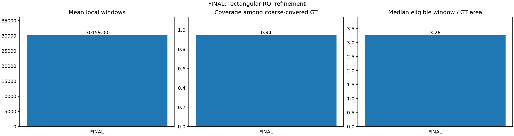
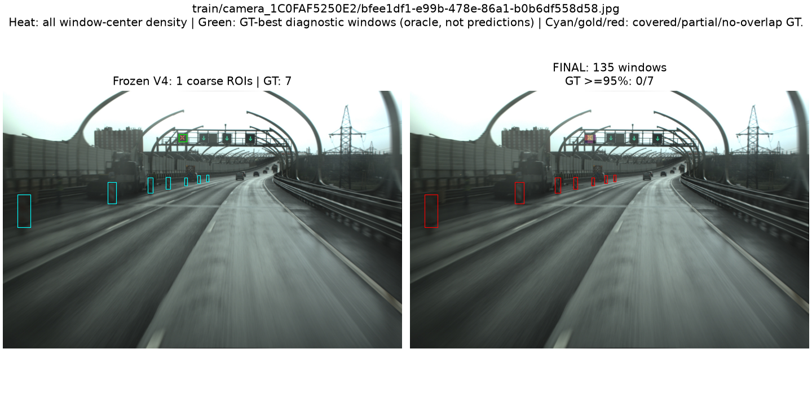
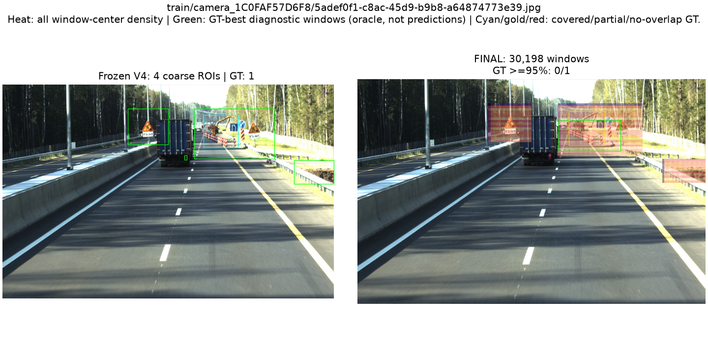
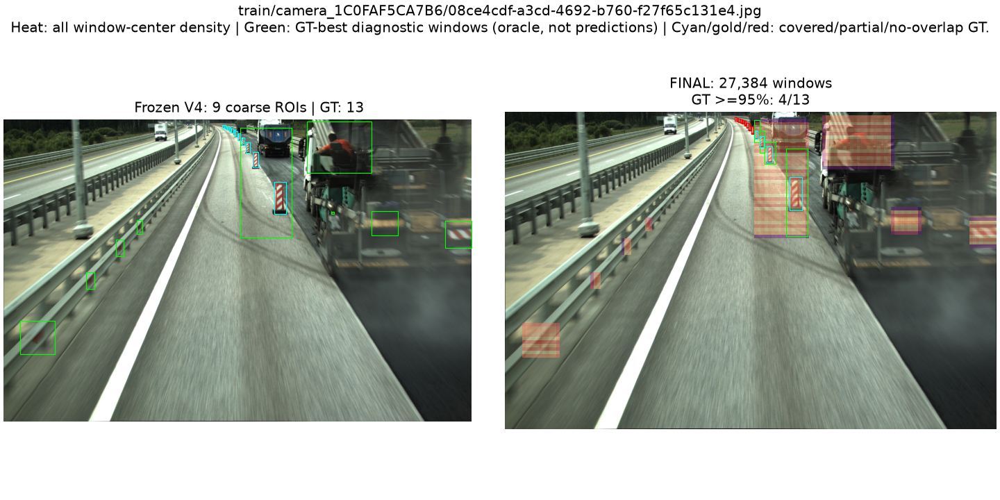
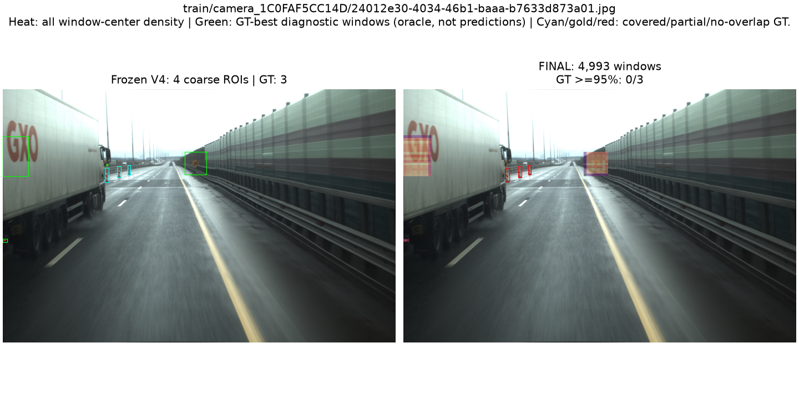
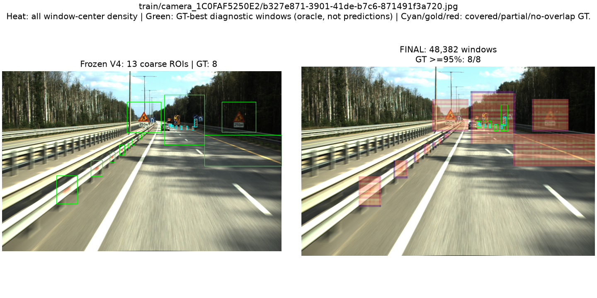
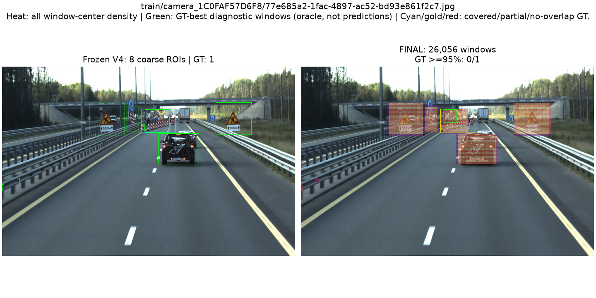
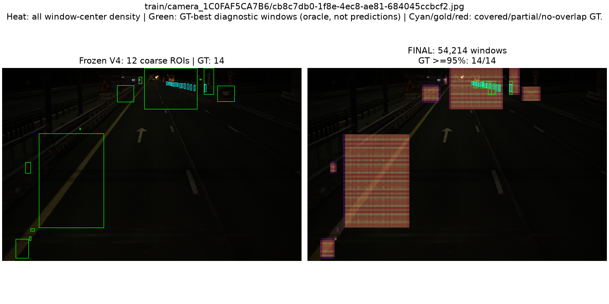
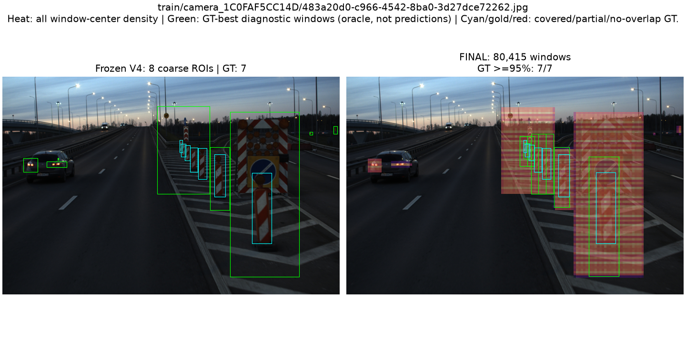
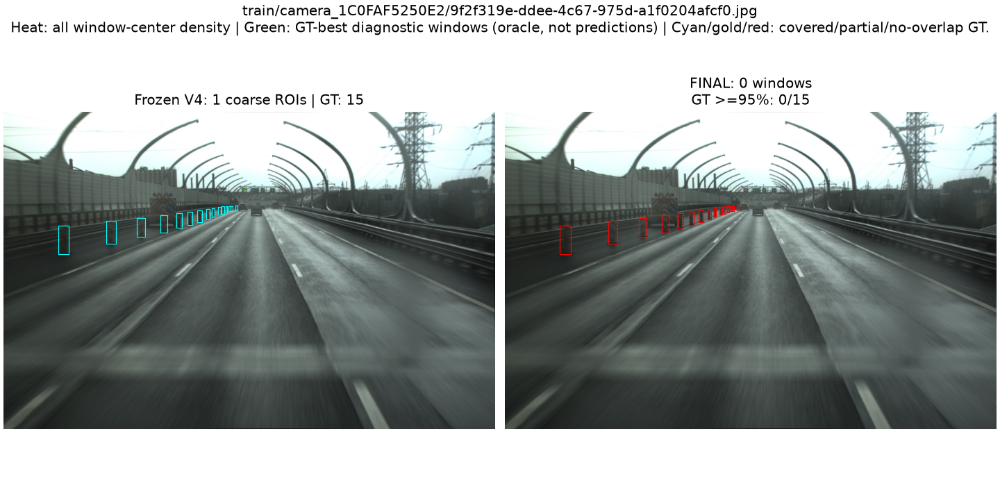
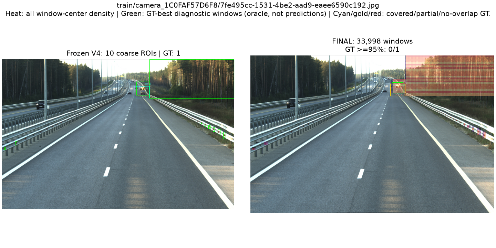
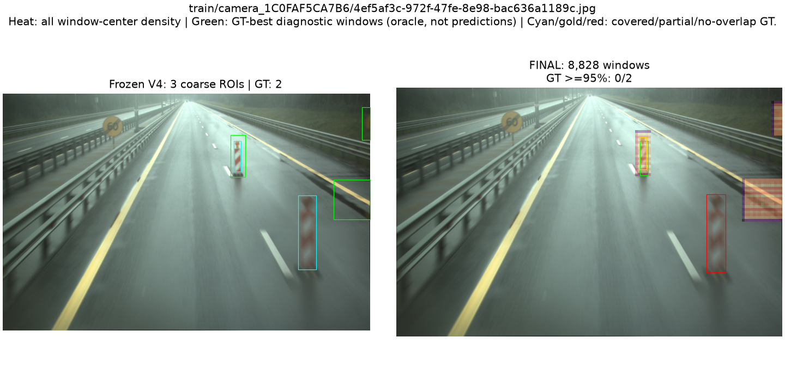
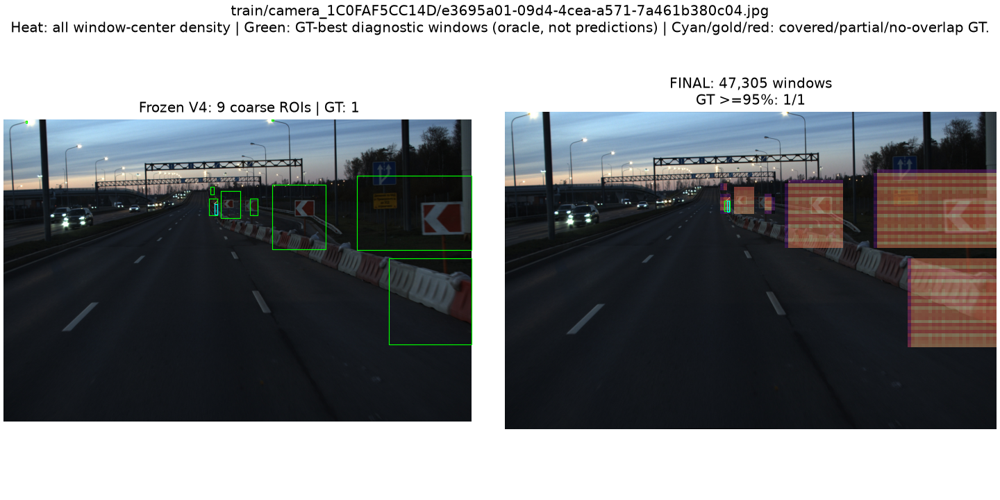